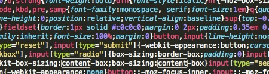
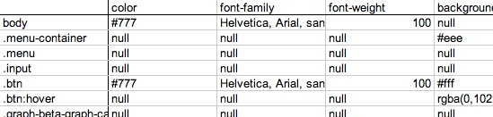

During my boredom, I like to write simple programs to solve sometimes trivial problems. For example, say you are in the process of writing a website with a substantial amount of CSS, so much so that errors are bound to occur, except the errors in question are technically valid. The issue I always came across was how to sift through the CSS code to spot the errors, sometimes without knowing where to start. How can I find inconsistencies quickly and rectify the problems as I see them?
Rather than search the internet for a solution, I decided I'd try and solve this one on my own. The method I came up with that most suited my likes and preferences was to take the CSS code and somehow insert it into a spreadsheet that would efficiently show the selectors, attributes, and elements in such a fashion that would make errors quickly apparent.
The first step was to figure out how make sense of CSS code in any way, shape, or form it may be written. Since CSS does not rely on indents or spaces (within reason), it became clear that a simplified parsing method would be necessary, and once that data had been properly stored in some correct way, the true work could be done. Never wanting to end my unhealthy obession with arrays, I chose to split all the data into separate groups based on their position with respects to several key CSS identifiers.
After the intial parsing and sorting, the rest was relatively easy. Since no automated correction was taking place (particularily because the computer might not understand what is incorrect, since the syntax is all correct), the remaining task was to needed was to put the information into a readible spreadsheet. To do so, I used OpenCSV to create CSV spreadsheet, easy enough.
So now the user has gone through and made the necessary corrections that would have otherwise caused visually unpleasing things, time to reverse the process and put everything back into a format the website can understand. Again, simple enough, just a matter of reversing the process. The one issue that I came across early on was how to deal with comments. Since